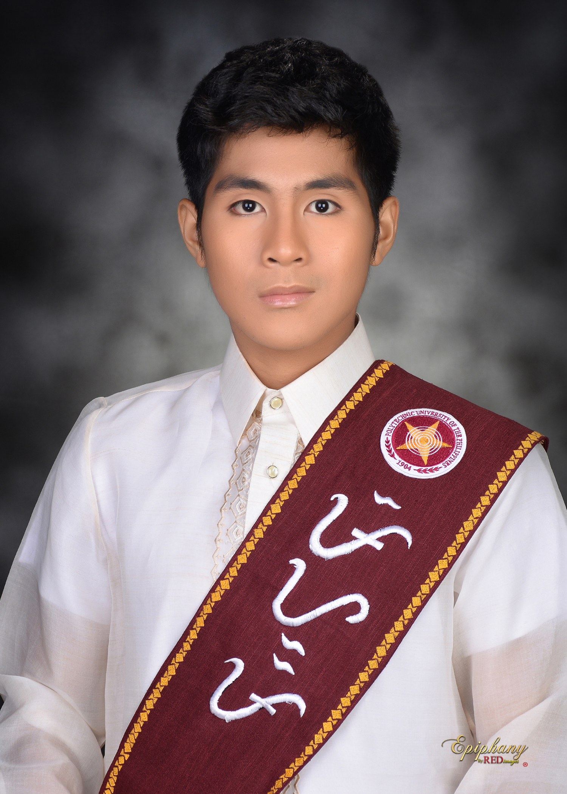

Name: Dawn Andrei Pamesa
Age: 20
Date of Birth: April 20, 2006
Status: Academic Scholar & Student-Athlete
A dedicated Computer Science student specializing in Data Science, seeking to leverage a strong academic foundation and technical skills in programming and web development to contribute to innovative tech solutions. Aiming to apply analytical problem-solving abilities and a strong work ethic in a professional environment.